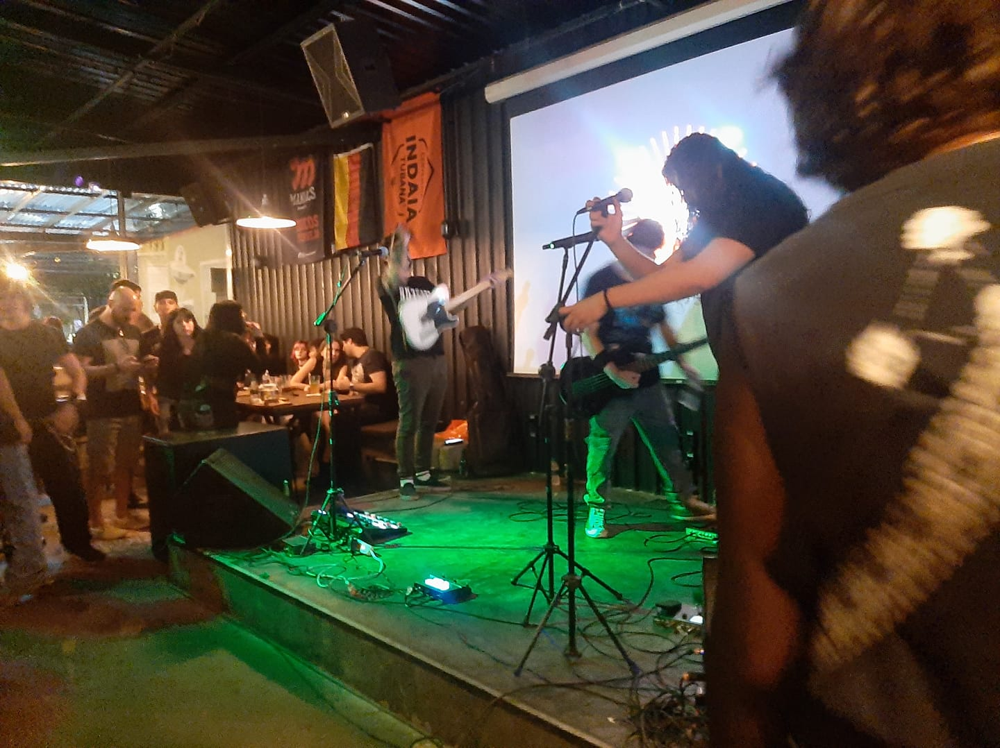
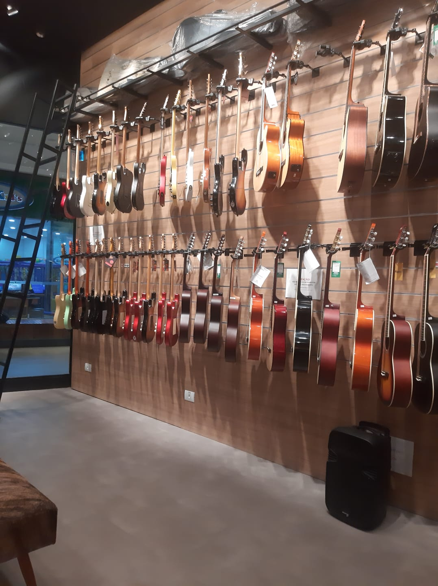
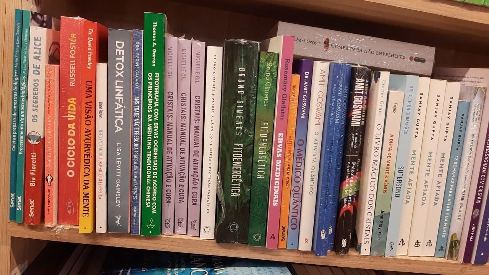
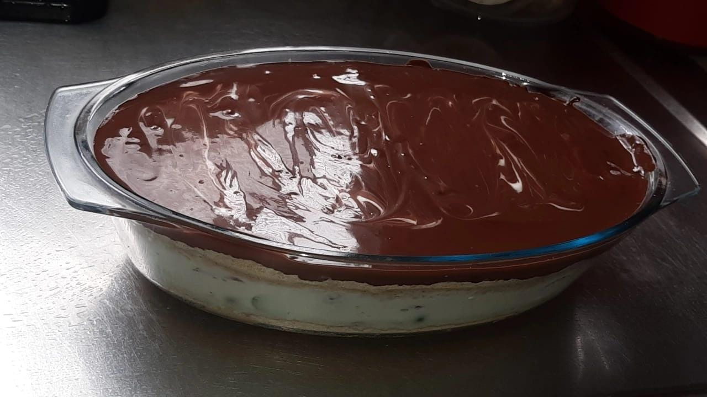

Sou bem eclética, ouço Heavy Metal, MPB, funk, entre outros estilos. Essa foto foi do meu primeiro show de Nu metal.

Sim, toco uma guitarra Statrocaster! Comecei no início desse ano e estou tentando melhorar até assumir publicamente esse hobby.

Uma dos meus hoobies e interesses favoritos é ler livros sobre espiritualidade, energias, chakras, esoterismo, amo tudo envolvido nesse tema.

Outro hobby que tenho é fazer doces como essa torta de leite ninho com frutas frescas.